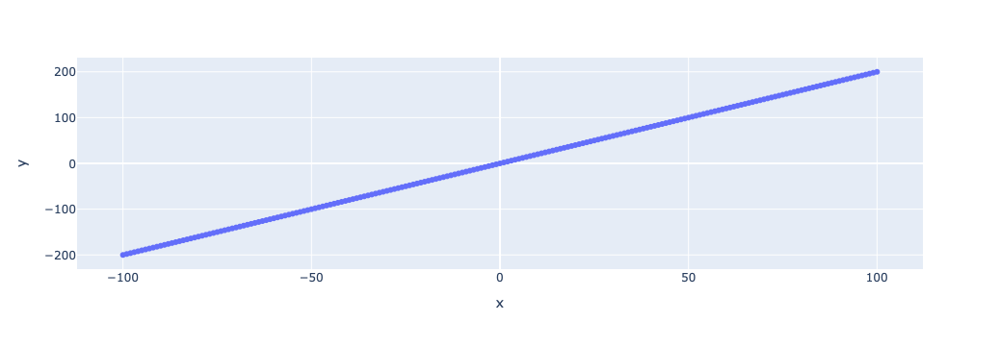

import torch
import pandas as pd
import plotly.express as px
x = torch.arange(-100, 100+1, 1)
y = 2 * x
px.scatter(x=x, y=y)
Goal: Given a function, how can we find it’s minimum value
Let x be a vaiable with can take any value from -inf to +Inf. We can think of x as the x axis. Now let y = x^2.
This means that for any value of x (say 2) we just double it to get y. (2 * 2 = 4).
y = 2x is rule we have defined. We can also call it a function (y is a function of x; as value of y depend solely on the value of x).
We know x looks like the x-axis, but how does y look. lets plot it.

Its a line which is going upwards as x increases!
Now lets think why that the case. Lets investigate a few values of x and they corresponding y values.
| x | y | x change | y change | |
|---|---|---|---|---|
| 101 | 1 | 2 | 1.0 | 2.0 |
| 102 | 2 | 4 | 1.0 | 2.0 |
| 103 | 3 | 6 | 1.0 | 2.0 |
| 104 | 4 | 8 | 1.0 | 2.0 |
| 105 | 5 | 10 | 1.0 | 2.0 |
| 106 | 6 | 12 | 1.0 | 2.0 |
| 107 | 7 | 14 | 1.0 | 2.0 |
| 108 | 8 | 16 | 1.0 | 2.0 |
| 109 | 9 | 18 | 1.0 | 2.0 |
| 110 | 10 | 20 | 1.0 | 2.0 |
In our table above if x1 = 5 & x2 = 6, y1 = 10 and y2 = 12. This implies that if we move one unit along x axis (6-5), we automatically move 2 unit along upwards along the y axis. For each point we can see that if the value of x increases by 1, the value of y increases by 2.
Let’s see why that happens. Consider 2 values of x. - x = x1, then y = 2 * x1 - x = x2, then y = 2 * x2 - Here x2 > x1
Then, - Increase in x = Distance moved along x-axis towards the right - Increase in x = x2 - x1 - Increase in y = Due to movement in x axis, how much did we move along the y-axis (upwards) - = y2 - y1 = 2 * x2 - 2 * x1 = 2 * (x2 - x1)
Notice that we moved along y-axis 2 times of how much we moved along the x axis! More importantly, we did not specify what is the difference between x2 and x1. This implies that for any increase along the x-axis towards the right we will always move 2 time upward along the y axis.
If x = 6.0 and x2 = 6.1; y1 = 6.0 * 2 = 12.0 and y2 = 6.1 * 2 = 12.2 - Increase in x (movement along x axis going from x1 to x2) - = 6.1 - 6 = 0.1 - Increase in y (movement along x axis going from x1 to x2) - = 12.2 - 12 = 0.2 = 2 * 0.1 = 2 * increase in x
This is why y = 2x is a line! And, the line “grows” by a factor of 2!
Why is it a line: > Because y moves up by the same factor for every movement to the right. Since this factor is always the same, the graph never bends and forms a straight line. In the example below we will see what happens when the slope is not constant
Growth factor of 2:
> As we take a step towards the right of x axis, we move 2 times as much upward along the y axis. Also, this is irrespective of how big a step we take towards right side of x-axis.
Also, if we keep increasing x the value of y keeps increasing. This is why we see y = 2x growing upwards as we move towards the right of x axis.
Hence, growth can be defined as \(\text{Growth or Slope} = \frac{\text{increase in } y}{\text{increase in } x}\) The above formula is intutive. For a line, how fast it grows depends on how quickly y increase when x is moved by a little bit to the right of x-axis. If y increase too much for a small change in x, the line will be steeper.
Hence, increase in y (rise)/ increase in x (run) gives us a constant factor for a line. Higher the value of factor (slope) steeper the line.
What would a negative slope imply? Its actually quite simple.
The negative sign indicates that the line goes downward as the value of x increase.
Lets consider another function: z = -2x
| x | y | x change | y change | |
|---|---|---|---|---|
| 101 | 1 | -2 | 1.0 | -2.0 |
| 102 | 2 | -4 | 1.0 | -2.0 |
| 103 | 3 | -6 | 1.0 | -2.0 |
| 104 | 4 | -8 | 1.0 | -2.0 |
| 105 | 5 | -10 | 1.0 | -2.0 |
| 106 | 6 | -12 | 1.0 | -2.0 |
| 107 | 7 | -14 | 1.0 | -2.0 |
| 108 | 8 | -16 | 1.0 | -2.0 |
| 109 | 9 | -18 | 1.0 | -2.0 |
| 110 | 10 | -20 | 1.0 | -2.0 |
Take away: 1. In the tables above, for each row, we have taken a one step (increased x by one; the next row) and calculated the slope. Slope is constant for straight lines, i.e., for all values of x its the same value. 2. The slope does not change if we increased \(x\) by a step size other that 1
Consider: 1. Function: \(y = 5x\) 2. \(x_1 = a\), then \(y_1 = 5 * x_1\). Let’s calculate slope at \(x_1 = a\) 3. We increment \(x_1\) by \(c\): - \(x_2 = a + c\) - Then, \(y_2 = 5 * x_2 = 5(a + c) = 5a + 5c\). In the tables in above sections, \(c = 1\) 4. Increase in \(x\) = \(x_2 - x_1 = a + c - a = c\) 5. Increase in \(y\) = \(y_2 - y_1 = 5a + 5c - 5a = 5c\) 6. \(\text{Slope at } x_1 = \frac{\Delta y}{\Delta x} = 5c/ c = 5\)
Note: - We get a constant slope value. Straight lines have a constant slope. - The slope does not depend on value of \(a\) (i.e.,value of \(x\)) & \(c\) (step size). This is why slope is a constant value for all \(x\). - The case above holds true for any value of \(a\) (value of \(x\)) & \(c\) (step size)
It looks like a curve! The curve \(y = x^2\) is summetrical about the y-axis. This is because \((-x)^2 = (x)^2 = x^2\). Therefore, for \(x\) & \(-x\) we get the same value for \(y\).
Varying slope at each \(x\): - The steepness of the curve varies with the value of x (the curve is flatter near x = 0 and gets steeper as we move away from 0 on either side of x-axis. For any - We know from previous section that slope is a measure for steepness. So can we use our previous technique to calulate slope at the a given \(x\) for \(y = x^2\)?
Approach 1: Trying the earlier approach: Slope at point \(x\) = \(\frac{\Delta y}{\Delta x}\)
So we need 2 points again \((x_1, x_2)\). Let: - \(x_1 = 1\), then \(y_1 = 1^2 = 1\) - \(x_2 = 2\), then \(y_2 = 2^2 = 4\)
Let’s try to find the slope at \(x_1\) - \(\text{slope at } x_1 = \frac{\Delta y}{\Delta x} = (4-1)/ (2-1) = 3/2 = 1.5\) Now, lets try a diffrent \(x_2\) - \(x_2 = 3\), then \(y_2 = 3^2 = 9\) - \(\text{slope at } x_1 = \frac{\Delta y}{\Delta x} = (9-1)/ (2-1) = 8/2 = 4\)
Oh, we get a different value! Why is that?
| x | y | x change | y change | slope | |
|---|---|---|---|---|---|
| 90 | -10 | 100 | 1.0 | -21.0 | -21.0 |
| 91 | -9 | 81 | 1.0 | -19.0 | -19.0 |
| 92 | -8 | 64 | 1.0 | -17.0 | -17.0 |
| 93 | -7 | 49 | 1.0 | -15.0 | -15.0 |
| 94 | -6 | 36 | 1.0 | -13.0 | -13.0 |
| 95 | -5 | 25 | 1.0 | -11.0 | -11.0 |
| 96 | -4 | 16 | 1.0 | -9.0 | -9.0 |
| 97 | -3 | 9 | 1.0 | -7.0 | -7.0 |
| 98 | -2 | 4 | 1.0 | -5.0 | -5.0 |
| 99 | -1 | 1 | 1.0 | -3.0 | -3.0 |
| 100 | 0 | 0 | 1.0 | -1.0 | -1.0 |
| 101 | 1 | 1 | 1.0 | 1.0 | 1.0 |
| 102 | 2 | 4 | 1.0 | 3.0 | 3.0 |
| 103 | 3 | 9 | 1.0 | 5.0 | 5.0 |
| 104 | 4 | 16 | 1.0 | 7.0 | 7.0 |
| 105 | 5 | 25 | 1.0 | 9.0 | 9.0 |
| 106 | 6 | 36 | 1.0 | 11.0 | 11.0 |
| 107 | 7 | 49 | 1.0 | 13.0 | 13.0 |
| 108 | 8 | 64 | 1.0 | 15.0 | 15.0 |
| 109 | 9 | 81 | 1.0 | 17.0 | 17.0 |
| 110 | 10 | 100 | 1.0 | 19.0 | 19.0 |
Look closely at the slope column. For y=2xy=2x y=2x, this column was always 2, no matter which pair of points we picked. Here, it’s different every single row!